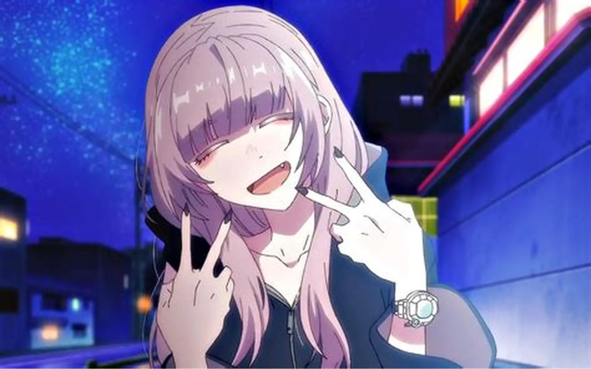
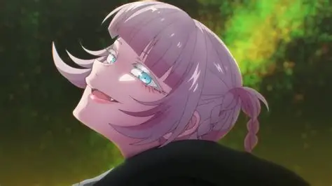
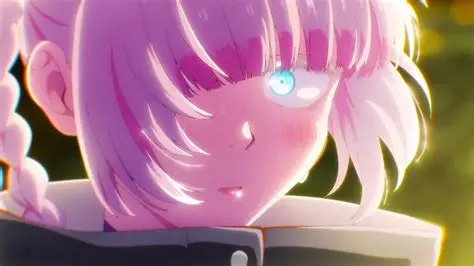

Cuz look at this beauty of gods most precious creation she is so fine has blue eyes and especialy she is so かわいい
is a carefree vampire from birth who was raised by Kabura Honda before attending a night school, where she met and befriended Kyouko Mejiro. By the time she chose to live a life by her own presence, Nazuna encountered Kou Yamori, a night roaming middle schooler in Komori. Whose blood tasted astonishingly delicious. In an exchange for spending time with Kou every night and drinking his blood, Kou intended to fall in love with Nazuna to become a vampire himself, a topic that discomforted Nazuna.
 